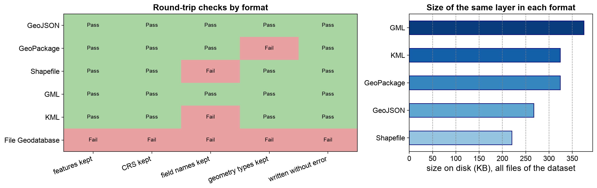

Remark
Please be aware that these lecture notes are accessible online in an ‘early access’ format. They are actively being developed, and certain sections will be further enriched to provide a comprehensive understanding of the subject matter.
3.6. Choosing and Converting Between Formats#
3.6.1. Learning Objectives#
By the end of this section, you should be able to:
Select an appropriate geospatial format for a given task using a comparison table.
Use Fiona for low-level, memory-efficient inspection and streaming of large files, and for writing with an explicit schema.
Apply a safe, verifiable workflow when converting data between formats.
Predict what each format changes or loses in a round trip (field names, geometry types, field order and names, write failures), and check for it.
Section Goal
The previous sections covered six formats and one live data source in isolation. This section steps back and compares them side by side, then gives you a repeatable, verifiable procedure for converting between formats without silently losing fields, geometries, or coordinate reference system information.
3.6.2. Format Selection Guide#
The table below summarizes when to choose each format covered so far.
Format |
Best For |
Avoid When |
|---|---|---|
GeoJSON |
Web APIs, small datasets, rapid sharing |
Large datasets (> a few hundred MB) |
Shapefile |
Receiving legacy/government data |
Creating new outputs (use GeoPackage instead) |
GeoPackage |
Multi-layer file storage, replacing Shapefile |
Need web-native JSON delivery |
File Geodatabase |
Receiving data from ArcGIS-based systems, enterprise workflows needing topology/relationships |
Open-source-only pipelines with no ArcGIS access downstream |
KML |
Google Earth visualization, field data |
Analytical pipelines (too verbose, limited schema) |
GML |
Government/standards-compliant data exchange |
Rapid prototyping (schema complexity overhead) |
OSM |
Global road networks, POIs, building footprints |
Data with quality/completeness requirements |
Behind those recommendations are a few technical properties that decide what a format can and cannot hold [Butler et al., 2016, ESRI, 1998, Portele, 2007, Wilson, 2008, Open Geospatial Consortium, 2023]:
Format |
Container |
Layers per file |
CRS |
Field names |
Styling |
|---|---|---|---|---|---|
GeoJSON |
One text file |
One |
Fixed: WGS 84, longitude-latitude |
Any |
No |
Shapefile |
Several files |
One |
Any, in a |
10 characters |
No |
GeoPackage |
One SQLite file |
Many |
Any |
Any |
No |
File Geodatabase |
One directory |
Many |
Any |
Any |
No |
KML |
One XML file (or KMZ) |
Folders |
Fixed: WGS 84, plus altitude |
Fixed vocabulary, plus |
Yes |
GML |
XML, often with an |
Feature types |
Any, named by |
Defined by the application schema |
No |
OSM |
|
Thematic layers made from tags |
Fixed: WGS 84 |
Free-form tags |
No |
3.6.2.1. Format, Storage, and Delivery Are Different Choices#
As the chapter began, the format used to receive data does not have to be the format used for analysis or delivery. Most workflows pass through three stages, and each stage has different needs:
Stage |
Goal |
Good choices |
|---|---|---|
Receive |
Keep exactly what the provider sent |
The original format, left untouched, with the download date |
Analyze |
Reliable, typed, multi-layer storage |
GeoPackage, or a spatial database for shared or very large data |
Deliver |
Match the recipient’s tools |
GeoJSON for web maps and APIs; GeoPackage for GIS users; KML for Google Earth; GML where a standard requires it; Shapefile only when asked |
3.6.3. Working with Fiona for Fine-Grained Control#
While GeoPandas handles most reading/writing needs, Fiona [Gillies and others, 2011–2026] provides lower-level OGR access [Rouault et al., 2026] useful for:
Inspecting file metadata (CRS, schema, layer count) without reading all data.
Streaming large files feature-by-feature to avoid loading everything into memory.
Writing features with full control over schema and driver options.
The cell below shows all three. It downloads the Natural Earth country boundaries [Natural Earth contributors, 2026] used earlier in this chapter, stores them as a GeoPackage, inspects the file’s metadata, streams its features to count geometry types without building a table, and finally writes a new GeoPackage with an explicit schema: the field names, types, and text width are stated, not guessed from data.
Driver : GPKG
CRS : EPSG:4326
Feature count : 177
Geometry type : MultiPolygon
First fields : [('featurecla', 'str'), ('scalerank', 'int32'), ('LABELRANK', 'int32'), ('SOVEREIGNT', 'str')]
Geometry types streamed from the GeoJSON: {'MultiPolygon': 29, 'Polygon': 148}
name population_millions
0 Fiji 0.889953
1 Tanzania 58.005463
2 W. Sahara 0.603253
3 Canada 37.589262
4 United States of America 328.239523
Fiona reports the file’s schema without building a table: 177 features, EPSG:4326, and a declared geometry type of MultiPolygon, because the GeoPackage promoted every polygon. Streaming the original GeoJSON shows the mix that was promoted, 148 Polygon and 29 MultiPolygon features. In the last step, the field names, types, and text width of the new file are the ones we stated, not ones guessed from the data.
3.6.4. A Safe Conversion Workflow#
For every conversion:
Preserve the source file and note its download date.
Inspect layer names, schema, feature count, CRS, and geometry types.
Convert into a target format that supports the required fields and geometry.
Reopen the output and compare feature counts, CRS, null values, and bounds.
Test a small spatial query or plot before deleting intermediate files.
In short form, the core of steps 3 and 4 is:
source = gpd.read_file("incoming/data.shp")
target = source.to_crs(epsg=32615)
target.to_file("staged/data.gpkg", layer="features", driver="GPKG")
round_trip = gpd.read_file("staged/data.gpkg", layer="features")
assert len(round_trip) == len(target)
assert round_trip.crs == target.crs
The round-trip check catches silent failures such as dropped records, an unexpected driver, or missing CRS metadata.
3.6.4.1. A Round-Trip Experiment#
Different formats lose different things, so it helps to see the checklist at work. The experiment below takes one layer, writes it to six formats, reopens each result, and checks five things: feature count, CRS, field names, geometry types, and whether the write succeeded at all. The test layer is the country boundaries with three deliberate additions: a field with a long name (population_estimate_millions), a date-time field (last_checked), and the natural mix of Polygon and MultiPolygon geometries that the source already has.
| features | crs | geometry | fields_lost | fields_added | size_kb | error | |
|---|---|---|---|---|---|---|---|
| format | |||||||
| GeoJSON | 177.0 | 4326.0 | {'Polygon': 148, 'MultiPolygon': 29} | [] | [] | 267.0 | NaN |
| GeoPackage | 177.0 | 4326.0 | {'MultiPolygon': 177} | [] | [] | 324.0 | NaN |
| Shapefile | 177.0 | 4326.0 | {'Polygon': 148, 'MultiPolygon': 29} | [population_estimate_millions, last_checked] | [population, last_check] | 220.0 | NaN |
| GML | 177.0 | 4326.0 | {'Polygon': 148, 'MultiPolygon': 29} | [] | [gml_id] | 375.0 | NaN |
| KML | 177.0 | 4326.0 | {'Polygon': 148, 'MultiPolygon': 29} | [NAME] | [id, Name, description, timestamp, begin, end,... | 324.0 | NaN |
| File Geodatabase | NaN | NaN | NaN | NaN | NaN | NaN | DataLayerError: Unsupported geometry type |
The table is dense, so the next cell turns it into a pass/fail grid with the five checks, and charts the size of each result. A format passes the field-name check only if every original name survived exactly as written.


Fig. 3.23 Round-trip checks for the same country layer written to six formats (left) and the size on disk of each result (right).#
Fig. 3.23 shows that only GeoJSON and GML pass all five checks. GeoPackage fails one, but only because single polygons were promoted to multipolygons, so a red cell is a change to inspect rather than always a loss. Shapefile and KML fail on field names, and the File Geodatabase row is red throughout because nothing was written, so its other four checks could not run. The size chart shows that size does not track fidelity: Shapefile is the smallest result and also lost field names, while the two formats that kept everything, GeoJSON and GML, are 267 KB and 375 KB.
Read the grid format by format. Each result below is something this run showed, and each corresponds to a limitation described earlier in the chapter:
GeoJSON kept everything, including the mix of
PolygonandMultiPolygon.GeoPackage kept every field and feature, but every geometry came back as a
MultiPolygon: a layer declares one geometry type [Open Geospatial Consortium, 2023], so the writer promoted the single polygons. Nothing was lost, but the types changed.Shapefile truncated the two long field names to ten characters [GDAL/OGR contributors, 2026] (
population_estimate_millionsbecamepopulation, andlast_checkedbecamelast_check), and GDAL raised warnings that are easy to miss.GML kept the data and added a
gml_idfield [GDAL/OGR contributors, 2026]. Its verbose XML made it the largest file, although the differences in size are modest for a layer this small.KML renamed
NAMEtoNameand added its own bookkeeping fields (description,timestamp, and others) [GDAL/OGR contributors, 2026]: its fixed vocabulary reshapes the schema.File Geodatabase refused to write at all [GDAL/OGR contributors, 2026], because the layer mixes geometry types. The error is the failure mode that the chapter warned about when it discussed mixed
PolygonandMultiPolygonlayers.
The last item has a standard fix: convert toward the more general type before writing. The cell below promotes every Polygon to a one-part MultiPolygon and retries.
Retry after normalizing to MultiPolygon:
features : 177
crs : 4326
geometry : {'MultiPolygon': 177}
fields_lost : []
size_kb : 164
error : None
Once every geometry is a MultiPolygon, the geodatabase accepts all 177 features with no field lost, in 164 KB. That is about half the size of the GeoPackage in this run, but, as before, it is one observation rather than a rule.
The experiment illustrates the rule that closes this section: a successful write is not proof that no fields or geometries were lost. Use the same inspect-convert-reopen checklist every time, and compare the reopened output with the source, rather than trusting the absence of an error message.
For guided practice applying this checklist, see the labs.
Practice
Pick a layer of your own with at least one field name longer than 10 characters. Write it to a Shapefile and to a GeoPackage, reopen both, and list the fields that differ from the original. Then write the same layer to GML or KML and list the fields that were added. Finally, record in two sentences which format you would choose for analysis, and which for delivery to a web map, and why.
3.6.5. Key Terms#
Term |
Meaning |
|---|---|
Round trip |
Writing data to a format, reading it back, and comparing the result with the original. |
Explicit schema |
A statement of field names, types, and widths, instead of letting software guess them from data. |
Streaming |
Reading a file one feature at a time, so the whole file never needs to fit in memory. |
Normalization (of geometry types) |
Converting a mixed layer to its most general geometry type, for example |
Silent failure |
A conversion that raises no error but drops, renames, or alters data. |
Receive, analyze, deliver |
The three workflow stages, each of which may call for a different format. |
3.6.6. Review Questions#
Which format would you choose to receive, to analyze, and to deliver to a web map? Explain each choice.
Name two things Fiona can do that are awkward in GeoPandas.
A Shapefile export raises no error, but two columns are missing from the output. What happened?
Why did GeoPackage change the geometry types in the experiment, and was any data lost?
A File Geodatabase write fails with an “unsupported geometry type” error. What is the likely cause and the fix?
List the five checks of a safe conversion, and give one failure each catches.
3.6.7. Summary#
The geospatial file format ecosystem has evolved from proprietary, single-purpose formats (Shapefile, KML) toward open, flexible containers (GeoJSON, GeoPackage) that better serve modern data engineering workflows, while OpenStreetMap and File Geodatabases each add their own trade-offs around governance and tooling. Selecting the right format for each pipeline stage, and verifying every conversion with a round-trip check, prevents silent data loss: as the experiment showed, formats truncate names, change geometry types, rename fields, or refuse to write, and only reopening the output reveals it.
The next section moves from files to databases, examining how PostGIS and SpatiaLite extend the relational model with spatial capabilities to support scalable, multi-user geospatial workflows.